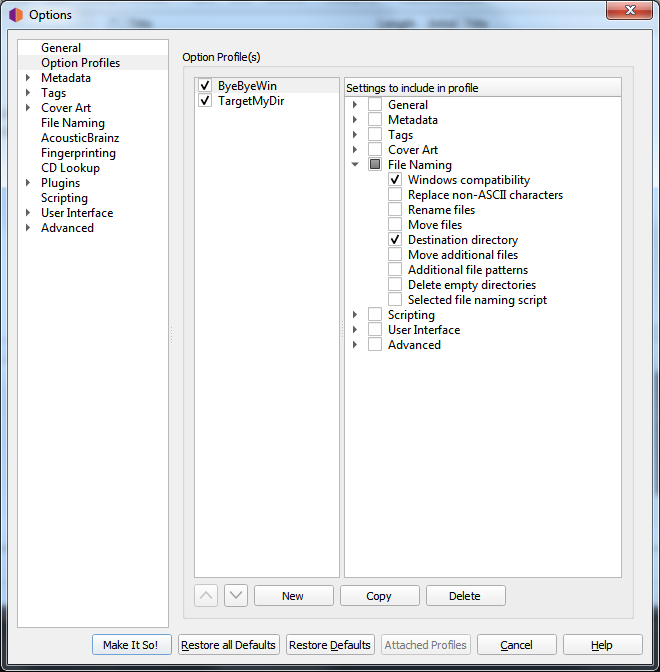
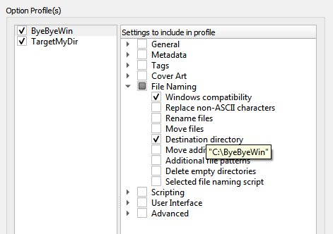
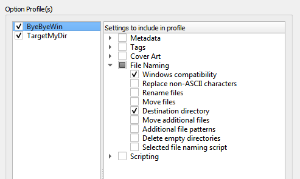
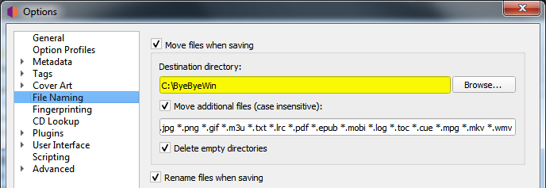
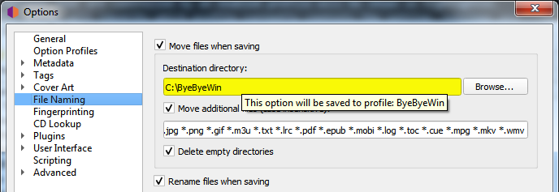
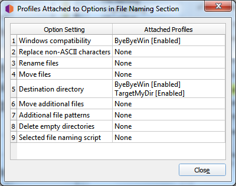

Option Profiles
As of version 2.7, Picard supports multiple profiles that can allow the user to quickly switch between option settings.
How Option Profiles Work
A profile is defined by a set of options it manages. For example, one profile may include settings for file naming such as the target directory and which file naming script to use, while another profile may include different settings for the same options or different options entirely (or some of each). Profiles are stacked and processed in the order specified by the user, from top to bottom with the lowest level being the system’s “user settings” profile. Each user-defined profile can be enabled or disabled independently from the other user-defined profiles. The system’s “user settings” profile is always enabled and includes all options.
When an option value is retrieved as part of Picard’s processing, it comes from the first enabled profile in the stack that manages that option. Initially, the profile stack contains only the system’s “user settings” profile, which holds the default settings for the user.
Example of Using Profiles
For this example, the user would like to define a set of options with alternate values, in this case a target directory where
audio files are saved (option move_files_to).
The user creates a new profile (named “TargetMyDir”), adds the option move_files_to to it, and enables this profile.
The stack is now:
[x] TargetMyDir move_files_to
[x] user settings move_files_to [plus all other settings]
They change the value of move_files_to (to “target_my_dir”) for this new profile.
Since the profile “TargetMyDir” is enabled, the value for move_files_to is retrieved from this profile. The “user settings”
still has the old move_files_to value.
Now the user wants to work on another set of music files, wanting to disable windows_compatibility for this set and save
them to the “not_for_windows” directory.
They create a new profile (named “ByeByeWin”), add options move_files_to and windows_compatibility, and enable it.
Now the stack looks like:
[x] ByeByeWin move_files_to windows_compatibility
[x] TargetMyDir move_files_to
[x] user settings move_files_to windows_compatibility [plus all other settings]
They change the values of move_files_to (to “not_for_windows”) and windows_compatibility (to false) for this new profile.
Now when they process their files, the files are saved to the “ByeByeWin” move_files_to directory, with windows_compatibility = false.
Now the user wants to save files to the “TargetMyDir” target directory again, with their usual options. To do this they simply disable the “ByeByeWin” profile (which can later be re-enabled if needed). The stack looks like:
[ ] ByeByeWin move_files_to windows_compatibility
[x] TargetMyDir move_files_to
[x] user settings move_files_to windows_compatibility [plus all other settings]
Finally, to return to their usual output directory the user only has to disable the “TargetMyDir” profile so the stack is:
[ ] ByeByeWin move_files_to windows_compatibility
[ ] TargetMyDir move_files_to
[x] user settings move_files_to windows_compatibility [plus all other settings]
Managing Option Profiles
All option profile management is done within the Option Profiles page available from the item on the menu bar. From this screen you will be able to add, copy, edit, remove, enable and disable profiles, as well as setting the order of the profile stack.
Initially, the list of profiles will be empty. To create a new profile click on the New button. This will create a profile with no options selected for the profile to manage. To rename the profile, right-click on the profile name and select the command. The list of options that the profile is to manage are selected from the list in the right-hand pane. Options can be selected either by group or individually. The groups can be expanded to see the individual options belonging to that group.
{kind=link}
You can see the value currently assigned to a profile’s option setting by hovering your cursor over the setting in the list. The value will be displayed as a tooltip for the setting.
{kind=link}
The profile stack order can be rearranged either by selecting a profile and using the up and down arrow buttons below the list, or by dragging the profile to a new position in the stack. Profiles are enabled when the box beside the profile’s name is checked.
Changes made to a profile’s options settings, enabled status, or position in the profile stack will be reflected in the option settings displayed on the other pages. Options that are controlled by an enabled profile will be shown as highlighted. Hovering your cursor over the highlighted option will identify which profile currently controls the setting. Settings are always displayed based on the first enabled profile in the profile stack, which corresponds to the setting that will be used during processing.
You can also quickly enable or disable a profile (but not change the order of the profile stack), using the item in the menu bar on Picard’s main screen.
When you click the Make It So! button, in addition to saving your updated profile configuration all highlighted options will be saved to the first enabled profile in the profile stack that controls that option. All other options will be saved to the “user settings” as before. This is described in more detail in the following section.
Saving Profile Option Settings
To save a value to a profile option setting, simply ensure that the the target profile is the first enabled profile in the profile stack, make the desired changes (the options should be highlighted), and then click the Make It So! button.
 {kind=link}
{kind=link}
Remember, all highlighted options will be saved to the first enabled profile in the profile stack that controls that option. All other options will be saved to the “user settings” profile which is the user’s normal settings, and includes all options. You can confirm which profile a highlighted option will update by hovering your cursor over the option.
{kind=link}
From the pages which contain options that can be included on a profile, you will also be able to see which profiles, if any, manage any of the options on the page. This is done by clicking the Attached Profiles button.
{kind=link}
This lists the attached profiles in the order in which they appear in the profile stack, and whether or not the profile is enabled. If the page does not contain any options that could be managed by a profile, the Attached Profiles button will be disabled.
Warning
It is important to understand that when you click the Make It So! button all of the option settings on all pages will be saved. If an option is managed by one or more profiles that are currently enabled, the option will be highlighted and it will be saved to the first enabled profile in the profile stack that manages the option. If there are no enabled profiles that manage the option, the option will not be highlighted and it will be saved to the “user settings” profile which is the user’s normal settings, contains all options, is at the bottom of the profile stack, and is always enabled. The “user settings” profile cannot be modified is not shown in the profile management page.